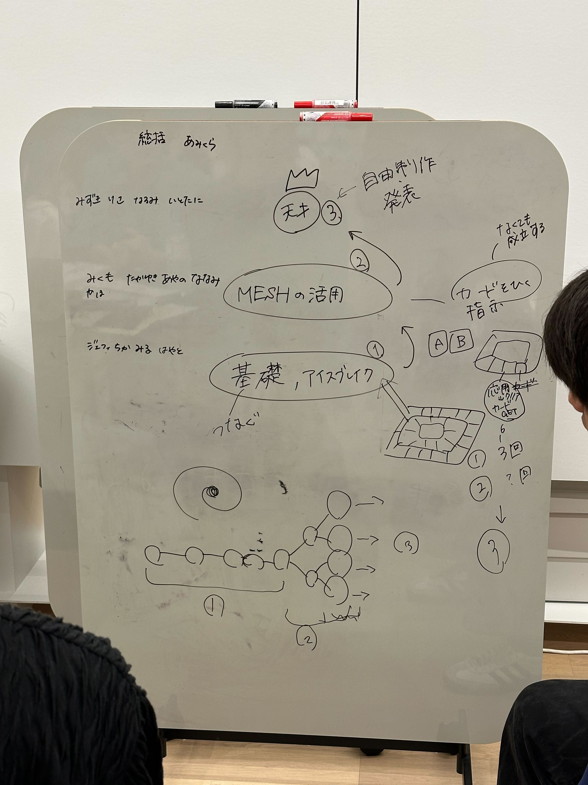

・Aチームはすごろく風のMESHを理解しながらレベルが上がっていくようなWS、
・Bチームはものを起点とした自由創造のWS、
・Cチームは遊び起点の自由創造のWS、
と各グループで個性のあるWSが持ち寄られた。
私達Bチームのスライド、進行企画書↓
スライド_PDF
進行企画書_エクセルファイル
そして、各グループはミニWSを行った後フィードバックをもらい、改善点を話し合った。
その後、次回の話へと移行した。
7月に入ると学生はテスト期間などがある関係で、MTGがほとんどできない。そのため、次回は本番同様のWSの内容を80分で行う。
それに合わせて、3グループのWSを参考に本番はどのようなWSを行うかなどを相談した。


結果として、モノポリー的な進行が良いのでは？ということになり、3段階にWSを分けることにした。

3段階の内容（仮）は、1段目にMESHの基礎、2段目に基礎の応用・ものと組み合わせる、3段目に自由制作、となっている。